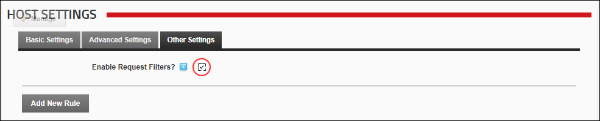

Enabling/Disabling Request Filter Settings
How to enable or disable the request filter settings.
- Navigate to Host >
 Host Settings.
Host Settings.
- Select the Other Settings tab.
- At Enable Request Filters?, select from the following options:
- to enable request filters. This displays any existing request filters and enables new rules to be added.
- to disable request filters.
